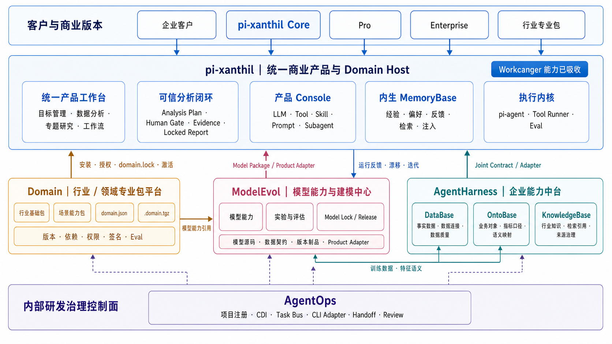

pi-xanthil 商业化产品方案
pi-xanthil 后续作为统一商业产品继续发展，并吸收 Workcanger 已形成的目标管理、数据分析、工作流、Human Gate、Evidence、Report Review 和 Locked Report 等能力。Workcanger 不再作为独立产品延续开发。
商业体系由五部分组成：pi-xanthil 是客户产品与 Domain Host；Domain 是行业专业包平台；AgentHarness 是可选企业能力中台；ModelEvol 是模型能力与建模中心；AgentOps 是内部研发治理控制面。

1. 整体商业结构
pi-xanthil Core + Industry / Professional Domain Packs + Pro + Enterprise + AgentHarness Enterprise Add-ons + ModelEvol Modeling Add-ons
2. pi-xanthil：统一商业产品
pi-xanthil 定位为本地安全、可扩展、可治理的 AI 数据分析 Agent OS，也是整个商业体系唯一的主产品入口。Core 必须保持完整分析闭环，不能成为只能演示的阉割版本。
产品工作台
- 目标管理：把业务目标和差距转化为可执行分析任务。
- 数据分析：从问题、材料和数据出发完成一次可信分析。
- 专题研究：围绕复杂问题组织假设、证据和多阶段验证。
- 工作流：把高频分析固化为可复跑、可参数化、可审核的流程。
可信分析闭环
业务问题与材料 → Structured Requirement → Analysis Plan → Human Gate → Analysis Run → Internal Review → Evidence → Report Review → Locked Report → 反馈与经验沉淀
所有结论必须能追溯到数据、证据、模型、Tool、Skill 和 Domain Package 版本；schema 或 Tool 错误不得交给 LLM 猜测修复。
产品 Console
产品 Console 与 pi-xanthil 保持集成，管理 LLM、Tool、Skill、Prompt、Command、Hook、Subagent、Workflow、Domain Package、权限、Trace、Eval 和健康状态，不拆成客户必须单独切换的另一套产品。
内生 MemoryBase
运行轨迹 → 经验候选 → 蒸馏与风险门禁 → 自动晋升或人工复核 → 多信号检索 → prompt 注入 → helpful / wrong 反馈 → 老化、冲突和 supersede
MemoryBase 不独立拆售，但按版本分层：Core 提供基础本地记忆；Pro 提供自动蒸馏、高级检索、评估和跨项目复用；Enterprise 提供团队共享、审批、权限、审计和私有化治理。
3. Domain：行业与专业能力商品层
Domain 负责专业能力的生产、验证和发布，不保存客户运行状态，也不绑定 pi-xanthil 源码、AgentHarness 表结构或 pi CLI 参数。
行业基础包
- 行业 Ontology、对象、关系和术语。
- 指标字典和指标口径。
- 数据要求、字段语义和映射规则。
- 行业知识、方法论、Policy 和基础 Eval。
场景能力包
- Command、Skill、Agent Role 和 Workflow。
- 确定性 Tool、分析 Gate 和停止条件。
- 报告模板、领域质量 Eval 和安全 Eval。
建议 SKU
- Retail Foundation Pack
- Audience Profile Insights Pack
- Member Retention Pack
- Sales Decline Diagnosis Pack
- Campaign Review Pack
- Store Performance Pack
安装与激活
购买 / License → 下载 .domain.tgz → 校验 manifest / checksum / signature / Eval → 安装到 Domain Store → 工作区显式启用 → domain.lock → Analysis Plan 确认能力与权限 → Execution Profile → 执行
安装不等于启用，启用不等于自动获得 Tool 权限。历史 Run 永远引用启动时的精确包版本、checksum、权限和 Execution Profile。
4. AgentHarness：企业附加能力
DataBase
对外包装为企业数据连接器、行业标准数据模型、字段映射、数据质量、数据血缘、平台标签、行业 benchmark 和私有数据接入服务，而不是简单销售“一个数据库”。
OntoBase
提供行业 Ontology、企业定制对象和关系、指标语义层、平台标签与企业字段映射、解释规则、source binding，以及版本、审核和发布治理。
KnowledgeBase
提供企业私有知识空间、文档接入、解析、切片、索引、检索引用、来源追溯、行业知识订阅、权限和内容治理。基础本地上传检索可以进入 Core，企业治理与持续更新作为付费能力。
5. ModelEvol：模型能力与建模中心
ModelEvol 独立管理模型源码、模型能力和版本治理，不把模型生命周期耦合到 pi-xanthil。它负责数据契约、训练与校准、实验、评估证据、Model Lock、Release、Product Adapter、产品验证和反馈迭代。
Capability Intake → Data Contract → Experiment Plan → Training / Calibration → Evaluation Review → Model Lock → Model Package / Product Adapter → pi-xanthil Runtime Validation → Feedback / Drift / Next Iteration
ModelEvol 拥有模型源码与版本真源；pi-xanthil 拥有产品运行、UI、调用、部署和反馈入口。DataBase 提供训练与评估事实，OntoBase 提供特征和指标语义。
基础模型可随 Domain 场景包交付；企业自定义建模、模型评估、版本锁定、发布回滚、漂移监控和持续迭代作为 Pro/Enterprise 或独立 Modeling Add-on 收费。
6. 产品版本与收费
| 版本 | 目标客户 | 主要能力 | 收费逻辑 |
|---|---|---|---|
| Core | 个人、小团队、试用客户 | 完整本地分析闭环、基础 Console、Memory、数据与文档接入 | 免费或低价入口 |
| Industry Packs | 有行业和场景需求的客户 | 行业基础包、场景包、Tool、Workflow、Policy、Eval、模板 | 按包订阅或 License + 更新服务 |
| Pro | 专业分析团队 | 高级记忆、批量任务、版本管理、高级评测和团队工作流 | 按用户或团队订阅 |
| Enterprise | 中大型企业 | 私有化、SSO/RBAC、审批审计、共享治理、定制与支持 | 年费、项目费和服务费 |
| AgentHarness Add-ons | 需要企业中台的客户 | DataBase、OntoBase、KnowledgeBase 企业能力 | 按模块、数据源、环境或组织授权 |
| ModelEvol Add-ons | 需要专属模型和持续迭代的企业 | 自定义建模、评估、Model Lock、发布、漂移和效果治理 | 按模型能力、实验周期或年度服务授权 |
7. 端到端运行关系
Domain 构建专业包 → validate / eval / pack / sign → 客户通过 pi-xanthil 购买和安装 → pi-xanthil 生成 domain.lock → AgentHarness Adapter 检查数据、语义和知识能力 → 用户确认 Analysis Plan → 生成 Execution Profile → ModelEvol 提供已锁定 Model Package / Product Adapter → pi-agent 执行 Skill / Workflow / Tool / Model → pi-xanthil 保存 Run / Evidence / Review / Locked Report → 用户反馈进入内生 MemoryBase → 模型效果、漂移和误预测反馈回 ModelEvol → 后续任务复用客户经验
权威边界：Domain 是专业包资产和版本真源；AgentHarness 是企业事实、语义和知识索引真源；ModelEvol 是模型源码、实验、评估证据、Model Lock、发布制品和 Product Adapter 真源；pi-xanthil 是客户工作区、安装启用、运行、Evidence、Report、产品记忆和体验真源；AgentOps 是研发协作与交付真源。
8. 商业化路线
阶段一：统一产品
停止把 Workcanger 作为独立产品建设，将其 Requirement、Plan、Human Gate、Evidence 和 Locked Report 能力吸收到 pi-xanthil，形成统一产品身份和工作区。
阶段二：Domain Host
冻结 Domain Package v1，建立安装、校验、启用、domain.lock、Execution Profile 和 License 最小闭环，完成首个 Audience Profile Insights Pack。
阶段三：AgentHarness 企业能力
通过消费契约打通 DataBase、OntoBase 和 KnowledgeBase，只让 Domain Package 声明中立资产，不依赖 AgentHarness 内部结构。
阶段四：ModelEvol 建模能力
建立 pi-xanthil 与 ModelEvol 的 Product Integration Contract，打通 Model Package、Product Adapter、运行时版本标记、回滚验证，以及产品反馈、模型效果、漂移和下一轮实验闭环。
阶段五：规模化销售
扩展行业基础包和场景包，推出 Pro、Enterprise、私有化、企业数据适配、定制 Ontology、企业知识治理和专业服务。
pi-xanthil 是客户购买和使用的统一 AI 数据分析产品；Domain 是持续生产和销售的行业专家能力；AgentHarness 是企业可选的数据、语义和知识中台；ModelEvol 是企业可选的模型能力、建模、评估与持续迭代中心；AgentOps 是支撑整个体系持续开发和交付的内部控制面。